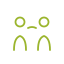

線画／currentColor対応／stroke-linecap: round。
HTMLで <img src="images/icons/sprout.svg"> として使うか、
インラインSVGとして埋め込んで color CSSで色変更できます。

1. 静的に使う場合：
<img src="images/icons/sprout.svg" class="w-8 h-8" alt="">
2. 色を変えたい場合（インライン埋め込み）：
<span class="text-primary">
<svg viewBox="0 0 64 64" fill="none" stroke="currentColor" stroke-width="1.8" stroke-linecap="round" stroke-linejoin="round">
<!-- pathをコピー -->
</svg>
</span>